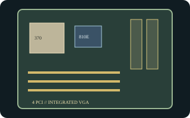

[ INDIVIDUAL COMPONENT // MOTHERBOARDS ]
Intel Desktop Board CA810E
Intel's 1999 Socket 370 desktop board for Pentium III/Celeron processors, using the 810E chipset. CA810E is a distinct Intel model with integrated graphics and assembly-dependent onboard options.

Exact identity and revision: Intel Desktop Board CA810E, Product Guide revision -001 (October 1999); documented BIOS family CA81020A.86A. Confirm the unit's AA/PCB revision and BIOS ID, especially before using optional LAN/audio-specific files.
Specifications
| CPU / socket / chipset | Socket 370 Intel Pentium III/Celeron processors qualified by Intel; Intel 810E with integrated graphics (no AGP slot). |
|---|---|
| Form factor / case | MicroATX, approximately 9.6 x 9.6 in.; ATX or microATX chassis only if the square board's standoffs, I/O shield, and clearances align. |
| Memory | Two 168-pin PC66/PC100 SDRAM DIMM sockets, up to 512 MB supported. |
| Expansion | Four 32-bit PCI slots; no AGP connector. |
| Storage | Two IDE channels supporting Ultra ATA/66 and one floppy interface. |
| Rear I/O | Integrated VGA, PS/2 keyboard/mouse, serial, parallel, USB, and audio; Intel 10/100 LAN and audio codec options vary by assembly. |
| BIOS / PSU | Intel BIOS family CA81020A.86A for the documented standard product. ATX 20-pin power input; inspect the board's power connector and PSU rail capacity before use. |
Compatibility and revision notes
The 810E graphics controller provides video; no AGP or ISA card can be installed. PCI slot count is four in the Intel guide. Check the AA marking, memory density limits, optional LAN/audio population, and supported Pentium III stepping before assembly. Chassis fit is not guaranteed by the microATX name alone.
Sources & further reading
- Intel Desktop Board CA810E Product Guide, revision -001 (archived Intel scan)Intel-authored installation guide for the CA810E model and its board options.
- Intel Desktop Board CA810E Technical Product Specification (archived copy)Technical reference for BIOS, connectors, power, and limits; distinguish its board record from later 810-family models.